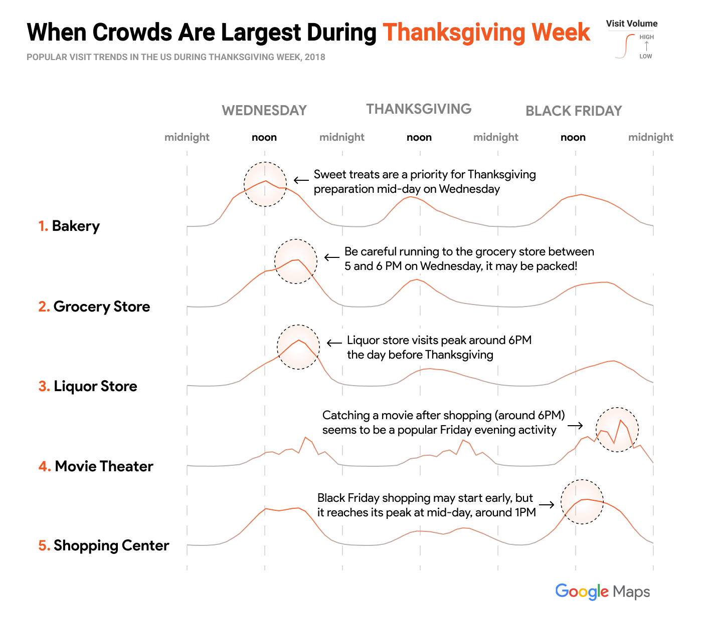
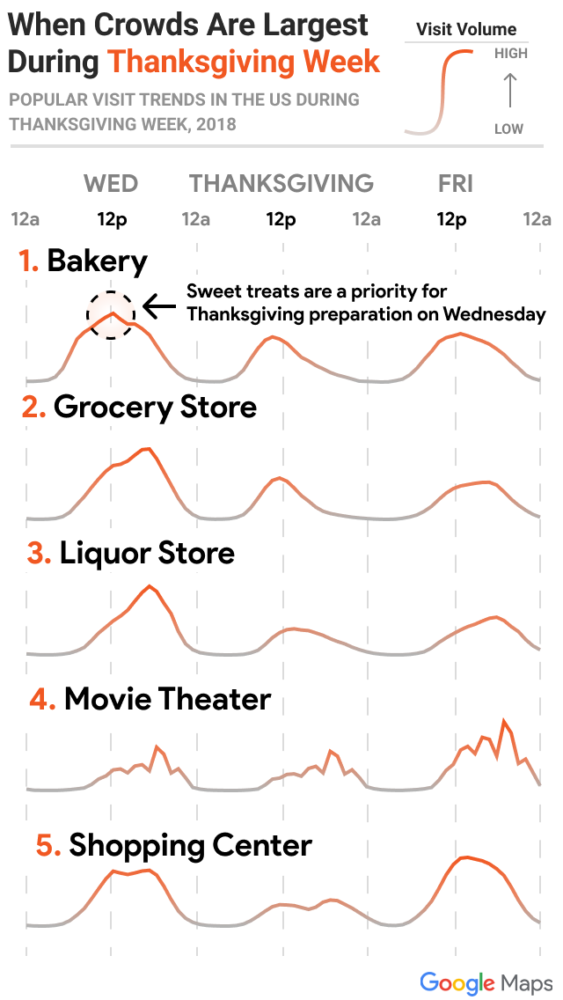
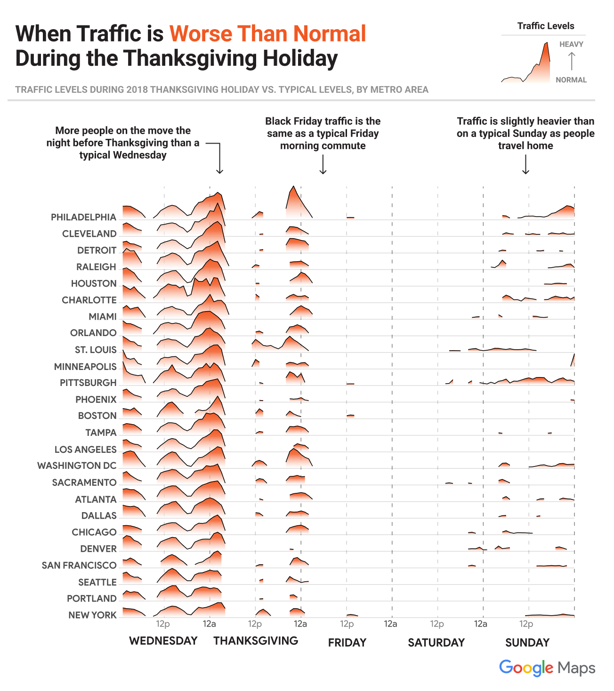
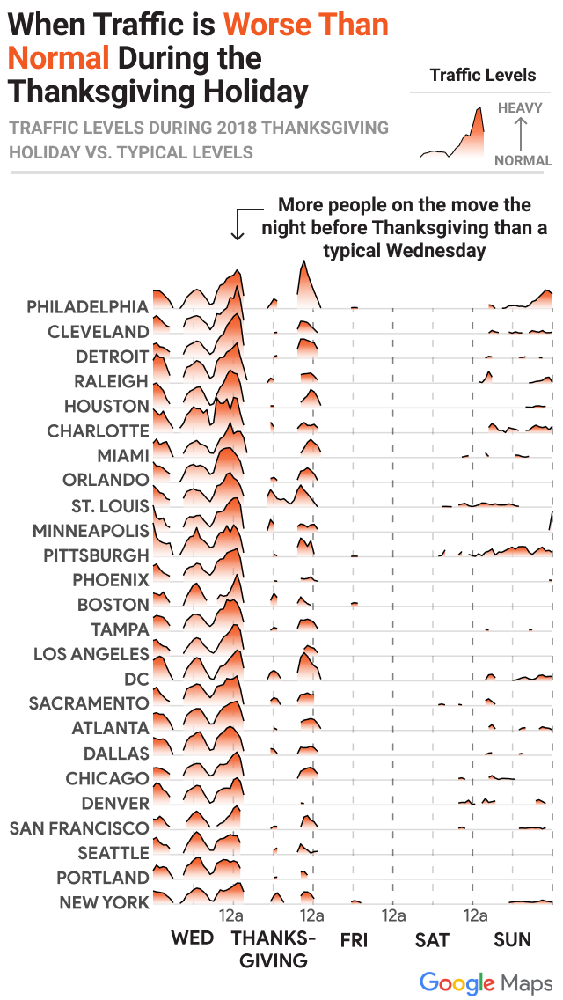

Thanksgiving is just a few weeks away, and Google Maps is here to help make celebrating a breeze. Using data from 2018’s holiday season, we’re giving you a closer look at the places people visit during the holidays, when to visit them, and the best times to get on (or stay off) the road in 2019.
Top Holiday Spots
To understand where people are headed this year, we analyzed the top searches on Google Maps during Thanksgiving week and compared them to a non-holiday week.
National Searches
All over the U.S., people are feeling festive–—searches for Christmas tree lightings, pop up holiday markets, and ice skating rinks see a significant spike. Museums are also a prime holiday destination, with the Motown Museum in Detroit, the Smithsonian National Air and Space Museum in Washington D.C., and the house from the 1983 film "A Christmas Story" in Cleveland among some of the trending places to visit nationwide.
Searches by City
At the city level, we segmented this data further, looking specifically at the trending searches in 3 categories: restaurants, attractions, and shopping centers. Here’s a look at what people are searching for in your area:
Trending Searches in
Compared to the Rest of the US
The best and worst times to get things done
Nothing kills a festive mood like waiting in line. Using aggregated and anonymized Popular Times data, we identified when crowds tend to be the largest at 5 holiday favorites: bakeries, grocery stores, liquor stores, movie theaters, and shopping centers. Check out when crowds tend to peak during Thanksgiving week, and make sure to avoid visiting during those times.
 {kind=link}
When traffic spikes in your city
You may know your city’s traffic patterns like the back of your hand, but holiday traffic is an entirely different beast. Using everyday traffic trends in your area as a baseline, here’s when you can expect traffic to be heavier than usual during Thanksgiving week.
 {kind=link}
When to hit the road
Your car is loaded up, the gas tank is full, and the turkey is ready to go. To keep your drive as stress free as possible, we’ve identified the best and worst times to leave for your Thanksgiving road trip so you can get to your celebration right on time.
When Should I Leave
For My Holiday Road-Trip?
Before Thanksgiving
- Best Time:
- Worst Time:
After Thanksgiving
- Best Time:
- Worst Time:
See how traffic changes on different days
Traffic in on